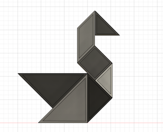
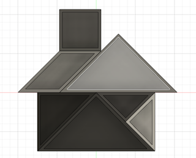
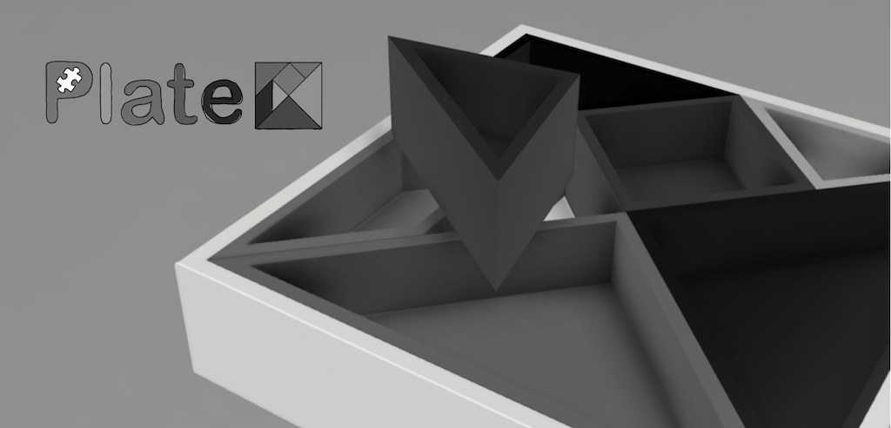
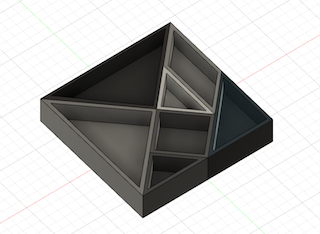
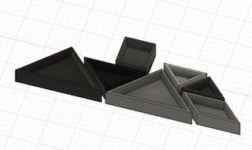
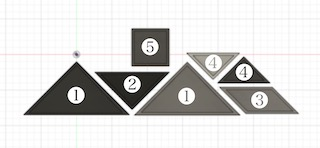
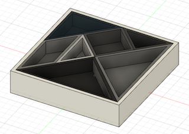
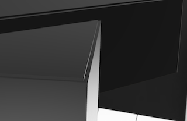
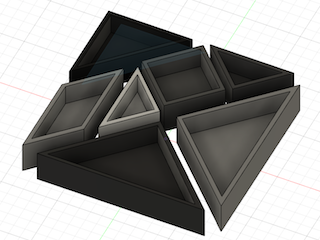

Puzzle plate 🧩
〜スマートなお皿でスマートに〜
コロナのせいで、バイトもほとんどないからずーっと家にいっぱなしで、
授業はオンラインでやる気も起きん…
洗濯に掃除に料理もしないといけないし、めんどくせえ！！！！やりたくねえ！！！
でもやらないと食べ物残りカスは腐るし…
頭も使わんから脳ミソも腐る…
そこで…！！！！


え、何ちょっとおしゃれじゃん、
可愛い、、、皿の組み合わせ方で絵に見える…？！
どゆことどゆこと？？？
「金子、ちょっとオシャレな脳トレになるお皿を作る…？！」
………………ってことでやってまいりました！！
テレビショッピングのお時間です…！！！！
今回ご紹介する商品は…こちら！！！！！！

皆さんは、料理するのが面倒でコンビニ弁当・・・
洗い物をするのが嫌で溜めてしまい、暇になって仕方なく「やるかあ。。。」と重い腰をあげる。
なんてことないでしょうか？！
そこで、今回は食事から片付けまでが楽しくなるモノの製作に挑戦しました！
商品名「Puzzle plate」
由来は、単純に「"パズル"のような"プレート"」だからです・・・笑

機能
・どんな料理にも合うシンプルなデザイン（実家のおばあちゃんがもっているようなお重をイメージ）
→モノクロカラーで、料理を引き立てる！


❶主食用皿
❷主菜用皿
❸さしちょこ
❹副菜用皿
❺副菜用皿
・専用のケースに収納すればワンプレートやお弁当箱としても使える
→収納するには脳トレパズルのようにお皿を組み合わせなければならない
→「位置覚えたら秒やん、ほんの数回きりの脳トレじゃん」って思いましたね？
だけど意外と難しいし、覚えられん・・・（お前だけや）

・お皿を脳トレパズルのように組み合わせると・・・かわいい！！！
→子供もごはんを食べるのが楽しみに！
→3歳女児「ママ〜今日はお家の中にご飯だよ〜」って感じですね。はい。
・裏には重ねた場合の崩れ落ち防止のための「うね」を作りました

大人の方は、シンプルデザインのおしゃれなお皿として様々な料理を引き立て・・・
子供は、姿が変化する不思議なお皿として・・・、
食後はただ洗うだけでなく、脳トレしながら片付け！！
